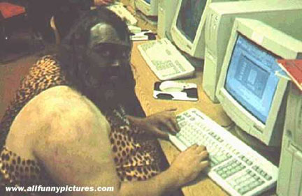

我是在一个征婚网站上找到她的
有时寂寞的时候就在网上乱找
发出去很多消息 可是并不是每一个都有回音
碰到她也是我的幸运
至少有一段时间在我寂寞的时候
有一种温暖把我包围
刚开始互相通Email 后来打电话
那时候她还在外地出差 从下面慢慢看吧
发件人: "我" <我@netbig.com>
收件人: "她" <她@21cn.com>
主题: 这是我的另一个信箱
日期: 2001年6月24日 16:40
今天没收到你的信
那个信箱真是糟糕
以后就用这个发吧
这也是常用的一个
今天午睡刚刚醒来
就是你的电话打进
也许今天我很幸运
缘分不经意的走来
但愿你早一点回来
让我看到你的风采
发件人: "我" <我@netbig.com>
收件人: "她" <她@21cn.com>
主题: 呵呵
日期: 2001年6月25日 17:49
别夸我哦，我哪里会写什么诗啊
只是觉得把文字排的整齐很好玩
我写的也就是断句断的恰到好处
根本就没有一点诗的意境和内涵
我从小长到大感觉也是一帆风顺
从来没有在学业上有过什么挫折
我外表有一点冷酷可是内心脆弱
不过也有一点倔强但又热情温柔
我喜欢谁就愿尽情的把热情抛洒
也希望如果哪个姑娘要是爱上我
也能没有保留的体贴我没有矜持
也许我的爱很幼稚但直接又简单
我以前也特别的喜爱运动和锻炼
可是现在懒了而且又很少有时间
但每天我总是从黄山路急速冲下
体会着疾风和街景从我身边飞逝
如果每一天都有一些激越和冲动
那就是这一刻能给我昂扬的斗志
真的渴望我心中的她能翩然走来
让我的每一刻每一天都充满激情
如果说我还有一些什么兴趣爱好
那就是通读一些古代先贤的长诗
那种感觉就好象是坐着一条小船
顺着一条长河的流水体会它颠簸
你说你能做一顿丰富可口的午餐
那可是我对我的爱人的最大期盼
如果你能够看到我吃饭时的样子
你就会知道吃饭会是多么的香甜
我的爸爸是一个非常普通的工人
我的妈妈是一个贤淑的家庭主妇
我没有象你那样的一个知识家庭
但同样也是有人牵挂想念的温暖
在虚幻的网中我曾经到处去寻觅
可是那一边不知道谁会和我有缘
但愿哪一天如果我从睡梦中惊醒
那就是你啊网络给我带来的惊艳
发件人: "我" <我@netbig.com>
收件人: "她" <她@21cn.com>
主题: 这两天好吗？
日期: 2001年6月27日 10:02
这几天一直忙着考试和排练
一直没有抽出时间给你写信
我真糟把你阴历的生日忘记
不知道你这两天过的怎么样
我想珠海那边现在一定很热
希望你的办公室里会有空调
一会我又要去排练合唱比赛
这几天这合唱把我弄得好烦
但想想先烈当时的慷慨激昂
真的有一种不可言状的振奋
我特别想能够早一点见到你
我们现在互相传照片好不好
还有你还没告诉我你的名字
不知怎么称呼你让我很迷糊
|
发件人: "我" <我@netbig.com> 现在终于有人肯和我一唱一和 |
 呵呵，你觉得我怎么样？够酷吧？ |
发件人: "我" <我@netbig.com>
收件人: "她" <她@21cn.com>
主题: 看到你的照片了
日期: 2001年6月27日 22:42
本来有点荫郁的心情变得豁然开朗
整个画面干净利落中间是你的明亮
多亏我没有一张电脑前的照片给你
因为上面乱七八糟的堆满书和音箱
感觉你是个温柔可亲又贤淑的姑娘
希望会有一天是你能够做我的新娘
不知上天是否能赐给我们这个缘分
首先也许需要我们进一步了解对方
我的性格有一点倔强但还算是善良
不过我喜欢轻闲不喜欢别人的强迫
这样注定我没有远大的抱负和志向
还没想去社会而愿安于校园的清贫
我只想做个凡人做我喜欢做的事情
爱护我的家人让他们能够感到安逸
我的生活和爱很简单也许象个孩子
如爱我希望接受我的一切包括幼稚
发件人: "我" <我@netbig.com>
收件人: "她" <她@21cn.com>
主题: 这两天过的怎么样？
日期: 2001年6月30日 10:15
这几天好不好？现在忙过了吗？
那天合唱比赛，我们得了第一。
现在还是很忙，假期任务很多。
回来别忘了我，我想和你约会。
发件人: "我" <我@netbig.com>
收件人: "她" <她@21cn.com>
主题: 施儿，好久没写信了
日期: 2001年7月5日 22:05
这段时间事很多一直静不下心
现在也是一样只不过忙里偷闲
这几天一直感受着上天的狰狞
太阳她恨不得把我们全部熔化
感觉烦躁时偶尔看看你的照片
简洁的你那是一道清爽的风景
如果有空希望再给我发来几张
让我闷热时能感受到丝丝清凉
每天晚上回去我就盼你的电话
听到你的声音是我的美好时分
那时我的心头澎升出一股暖意
象你哈的气在我耳边轻轻吹拂
我不知道我能给别人带来什么
但愿象个武士能带来安全舒畅
你就象一只小鸟依傍在我肩头
和我在一起就象吃着哈根达斯
发件人: "我" <我@netbig.com>
收件人: "她" <她@21cn.com>
主题: 对了，施儿，手机号码告诉你：1395517****
日期: 2001年7月8日 22:08
回来别忘了联系我，我的手机一直开机
昨天怎么没来电话？我一直在宿舍盼着
这两天合肥凉快了，估计也在盼你回来
不要眷恋那边的海，我这里有风的味道
发件人: "我" <我@netbig.com>
收件人: "她" <她@21cn.com>
主题: 施儿，这几天好好过
日期: 2001年7月16日 21:37
这几天身体不舒服不想让你看到我容颜的憔悴
可恶的噬齿让我每年都有那么几天难挨的折磨
肿起来的半边脸不仅难看而且还让我吃不下饭
疼痛就象一场瘟疫蔓延到我的头让它痛的厉害
我的心情很容易随着我的肉体状态而变好变坏
哎我永远脱离不了凡尘而感受到心灵上的超升
我非常崇拜那些伟人能在病痛中有伟大的杰作
我一点小病就让我做不了事而且心情烦躁不安
菩萨真好能够象大海一样接纳天下众生的苦难
我不希望那样但愿意能够把你的苦痛纳入怀中
昨夜我的一时冲动后来让我心感到深深的不安
你那么温柔就象春风一样让我后悔当时的冷漠
静静的听着你说的话并且看着你如花般的笑嫣
和你在一起的感觉真的很象春风对我周身沐浴
有时候我真的禁不住想要表示出我对你的亲昵
可是只敢去抓你的手不敢无所顾忌的过分张扬
如果哪天我突然把你拥入怀中希望别嫌我粗鲁
因为啊粗旷是我的本性你的温柔是我心中伊人
今夜伴着我的头痛静下心来把这些字为你写下
希望你能不介意我的作为好好过等待我的康复
发件人: "我" <我@netbig.com>
收件人: "她" <她@21cn.com>
主题: Shi, I don't know how to say
日期: 2001年7月23日 22:41
I don't know how to begin my words
cause penicillin just silly my mind
Sometimes I like a blind to feel
and got a portion of the elephant
I have a little awfulness
when you are late the third time
hope you don't mind my honesty
splash my feeling so directly
I should be a man with wide bosom
and not tightly gaze your flaw
that will be like a shy fool boy
only immerge road and miss the view
you so kind like a nature good poe
If you are willing I lie in you
I'll be so happy to feel your gentle
Would you give me safe for the whole
发件人: "我" <我@netbig.com>
收件人: "她" <她@21cn.com>
主题: 施儿，我想你！
日期: 2001年9月25日 19:13
好久都没有听到你的声音了
这一段时间让我过的很郁闷
不知道你那边现在情况怎样
上次看你匆忙忘了要你号码
记得我们相识就是这种方式
现在郁闷中让我又重新想起
不知你当时是否有温馨回味
当时的心情我现在依然感觉
我心那种绵绵的对你的思念
那种想要急切见到你的欲望
后来我们终于相遇并且相识
也许那天将成为历史性时刻
衷心希望我们将来能够甜蜜
那天7.12号会成为历史见证
不知道你是否愿意和我一起
想你不只是梦中缠绵的欲念
有时对世界有种陌生的恐惧
真想能依偎在你温柔的胸怀
希望你能够作我安全的港湾
让我的心能够不再彷徨流浪
发件人: "我" <我@netbig.com>
收件人: "她" <她@21cn.com>
主题: 施儿，我到了
日期: 2001年10月15日 19:36
11号当天下午就到了目的地，之后很快一切就安排妥当了，
到了日本感觉这里确实很好，特别是这里的人都是很友好。
和头一起来就是非常有好处，这两天逛遍了周围很多的店，
我想以后的几周会过的很好，可是见不到你会让我不好过。
这几天想到你就让我很难过，不知你到底对我怎样的感觉，
每次当我想接近你和你亲近，你总是那样带着鄙夷的表情。
也许那种感觉发自你的心底，我并不是你心中成功的男士，
或许是你感觉矜持被我曲解，而导致我的内心充满了郁闷。
那天我的生日我有一个心愿，多么希望能在那天献出初吻，
也许对你抱的希望太过强烈，至今仍感觉是我最大的遗憾。
以前我曾经交往过两个姑娘，都是发展到牵手就没有下文，
有时欲念的冲动我好想去吻，可总是象道难关我无法通过。
可她们至少假装无知的期待，后来感觉不适合就不再来往，
不象你对我不可冒犯的冷漠，就好像我想要存心对你轻薄。
虽然我对你充满强烈的欲望，可我追求着两情相悦的完美，
如果你的心底对我有种不屑，我们就没有必要烦恼的来往。
我告诉你这些因为对你留恋，愿意坦白内心让你能了解我，
如果你愿意告诉我你的想法，至少让我烦闷中能有点安慰。
感觉世界真的很象个个围城，每个不同的圈着不同的生活，
这里的世界再好我也不羡慕，同时他人很难融入我的生活。
不同人对成功有不同的理解，我只会追求我的简单和平静，
如果你能愿意跟随我的平淡，不须你鼓励只要不对我冷漠。
一阵copy paste又完成了一段
写的有点模样的我都保留了下来
所有这些如果我自己都不珍惜
就更不指望她能够把之珍惜了
到这里和她的故事就已经结束了
和她在一起感觉虽然好 可惜总是闹别扭
哎 很多都怪我没有男人风度
不过我确实不是那种善于掩藏我内心的人
一件事要么不说 一说出来就说个彻底
从前面你也看到了一些眉目
其实我并不是那种低不下头去的大男子主义
只是如果谁真的对我表示不屑 我绝不会低头
没有回敬我的不忿就已经不错了
哎 也许是我误会她了
可是她又不肯向我解释 那就算了
现在回想前面的一切
我也许都能以一种平淡而处之
但我当时的经历都让我带着一股热情
所有这些并不会因为我是混蛋而淡化
相反 混蛋也许有比常人更浓的心
还有 这一年别人介绍了几个
不过一般见了第一次面就没见了
有个女孩 和她第二次吃饭后就不想见了
虽然她长的很秀气 很多习惯让人不能容忍
没有留下什么印象 下面还要接着写娟儿